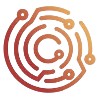
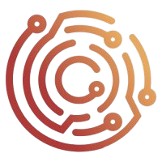

I am a 20-year-old Romanian professional, currently living in Spain, with solid training in Microcomputer Systems and Networks (SMR). During my internships as an offensive cybersecurity programmer, I gained valuable practical experience working with Linux environments (Kali Linux, Ubuntu Server, Arch Linux, Fedora, and Parrot Security) and ethical hacking tools.
My passion for offensive cybersecurity has driven me to be a constant self-learner, mastering languages such as Python and Bash, and preparing for professional certifications like eJPT v2 and LPIC 101.
I am a native Spanish speaker, have functional English skills, and am currently studying Dutch. My profile combines proactivity, curiosity, and quick adaptation to new technologies.
I am passionate about offensive cybersecurity with technical training in the Intermediate Vocational Training in Microcomputer Systems and Networks (SMR) in Spain. Currently, I am studying online the Higher Vocational Training in Network Systems Administration (ASIR), and once completed, I will continue with an online specialization degree in cybersecurity.
I have completed professional internships in Spain and the Netherlands, where I developed a Python CLI tool on Kali Linux, consolidating my skills in scripting and automation.
My main environment is Kali Linux and Linux in general, with practical experience in Arch Linux, Fedora, and Ubuntu Server. I master object-oriented Python, with knowledge of cybersecurity-specific libraries such as Scapy, socket, DNS, and WHOIS, and I use Bash and PowerShell to automate tasks and optimize pentesting processes.
My main specialization is network and system pentesting, combining vulnerability analysis with automation through scripting. I aspire to join Red Team environments to conduct advanced controlled attack simulations and contribute to continuous corporate security improvements.
I am currently preparing for the eJPT v2 and LPIC-101 certifications, planning to advance towards CEH, OSCP, and advanced Linux certifications. I complement my training with specialized courses and reference books, always seeking to deepen my knowledge and apply what I have learned in real or lab environments such as TryHackMe and HackTheBox.
I define myself as an extremely curious, self-taught, and methodical person who does not settle for surface knowledge but seeks to deeply understand system operations to create innovative solutions. My professional ethics are based on honesty, punctuality, and commitment to quality.
My goal is to grow as a cybersecurity professional, facing challenges that push me to learn and improve, providing real value to the organization that trusts my abilities, and developing tools and techniques to enhance protection against advanced threats.
Certifications in progress
Certifications in progress


 



WordPress web development and maintenance internship at Terados (Spain)
Visitar Sitio →Python tool focused on DNS information gathering, developed during my internship using Kali Linux to automate reconnaissance tasks.
Download Script →